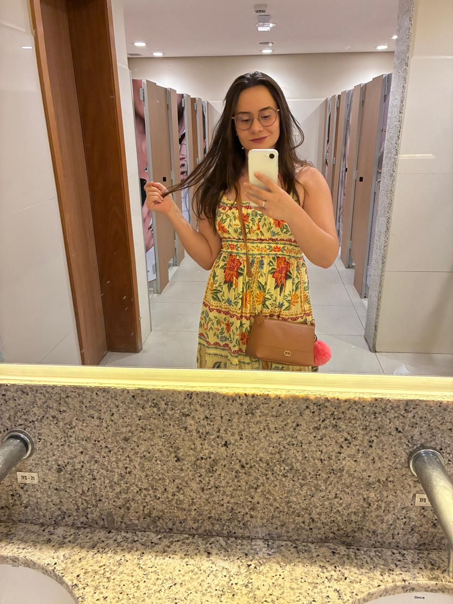
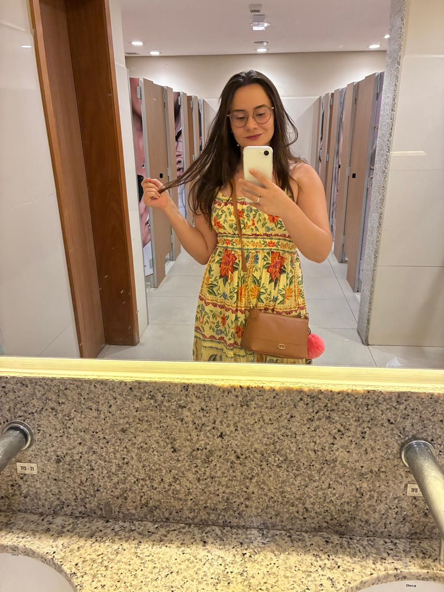
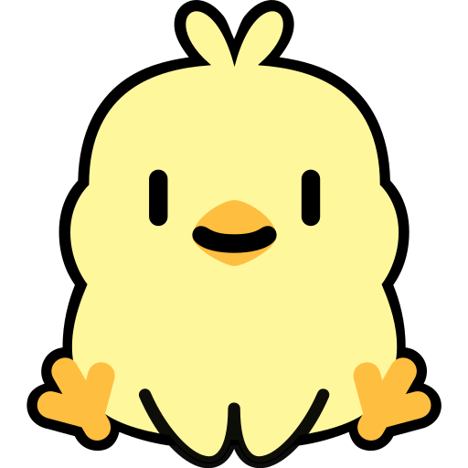
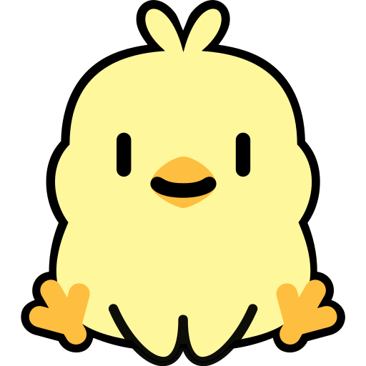
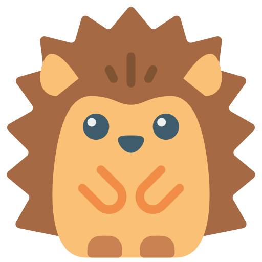
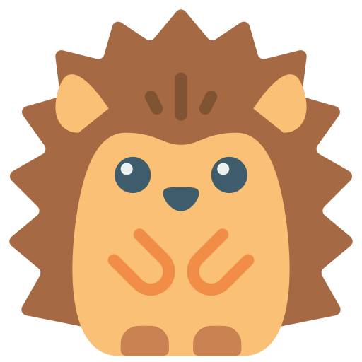

Meu amor,
Meu amor,
(clique aqui para iniciar a nossa música üîä)
Enfim, nosso primeiro Dia dos Namorados!! Estamos namorando há 3 meses e meio, mas parece que já vivemos uma vida inteira juntos. Cada momento, cada experiência, cada coisa que fazemos juntos torna meus dias mais iluminados e felizes.
Eu poderia passar horas e horas escrevendo sobre todos os momentos especiais que já vivemos, e ainda assim não seria o suficiente para expressar o quanto sou grato por cada um deles.
 Lembro de quando fizemos ovos de Páscoa: um simples ovo que deveria ser trufado virou um ovo super recheado de colher üòÇ. Tamb√©m de quando fomos ao cinema pela primeira vez, ficamos abra√ßados, curtindo o filme sem nos importar com o tempo.
Ainda me lembro da sensação de nervosismo quando te esperei no nosso primeiro encontro na San Gennaro. Mas, assim que te vi chegando, andando na minha direção, todo o nervosismo sumiu. Eu estava diante da mulher mais linda que já tinha visto na minha vida. Depois deste dia, continuamos conversando, treinando na academia juntos, e um sentimento foi crescendo dentro de mim.
Lembro de quando fizemos ovos de Páscoa: um simples ovo que deveria ser trufado virou um ovo super recheado de colher üòÇ. Tamb√©m de quando fomos ao cinema pela primeira vez, ficamos abra√ßados, curtindo o filme sem nos importar com o tempo.
Ainda me lembro da sensação de nervosismo quando te esperei no nosso primeiro encontro na San Gennaro. Mas, assim que te vi chegando, andando na minha direção, todo o nervosismo sumiu. Eu estava diante da mulher mais linda que já tinha visto na minha vida. Depois deste dia, continuamos conversando, treinando na academia juntos, e um sentimento foi crescendo dentro de mim.
 


Gratidão √© reconhecer que a vida √© um presente! üåª
De: Felix!


 ' />
' />

 ' />
' />
' />
' />
×